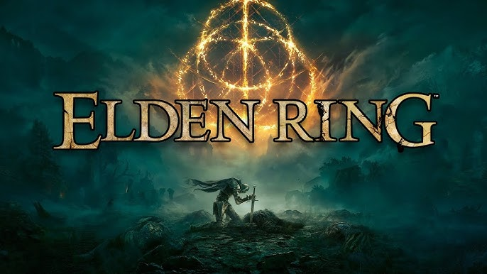
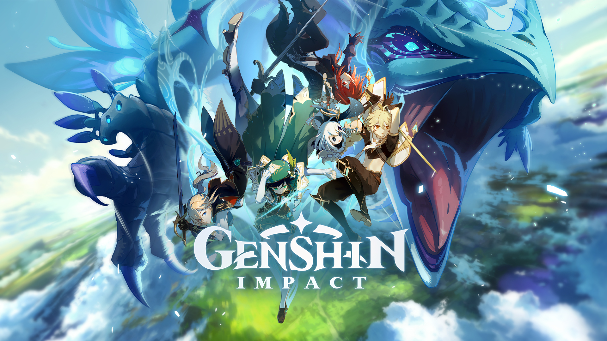

TOP 5
1.- Elden ring
Elden Ring es un videojuego de rol de acción desarrollado por FromSoftware y publicado por Bandai Namco Entertainment. Lanzado en febrero de 2022, combina elementos de los anteriores títulos de FromSoftware, como la serie Dark Souls, con un mundo abierto expansivo y una narrativa colaborativa con el autor de Game of Thrones, George R.R. Martin.
2.- The Legend of Zelda: Breath of the Wild
The Legend of Zelda: Breath of the Wild es un videojuego de acción y aventura desarrollado por Nintendo, lanzado en marzo de 2017 para Nintendo Switch y Wii U. Es la decimoctava entrega principal de la serie The Legend of Zelda y ha sido aclamado por su innovador enfoque en el mundo abierto.

3.- Genshin impact
Genshin Impact es un videojuego de rol de acción desarrollado por miHoYo, lanzado en septiembre de 2020. Ambientado en el mundo de Teyvat, el juego ofrece una experiencia de mundo abierto que combina exploración, combate y narrativa.
4.- Dark Souls
Dark Souls es un videojuego de rol de acción desarrollado por FromSoftware y lanzado en 2011. Es conocido por su complejidad, dificultad y su diseño de mundo interconectado. La historia se desarrolla en un oscuro y devastado reino llamado Lordran, donde los jugadores asumen el papel de un "no muerto" que busca entender su destino y enfrentar poderosos enemigos.

5.- Minecraft
Minecraft es un videojuego de construcción y supervivencia desarrollado por Mojang Studios, lanzado oficialmente en 2011. Se caracteriza por su estilo visual en bloques y su mundo abierto, donde los jugadores pueden explorar, construir y crear.